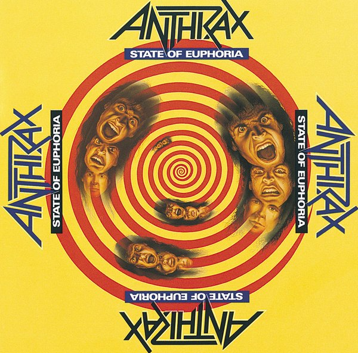
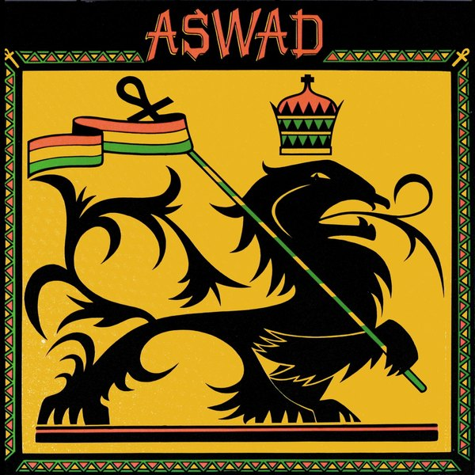
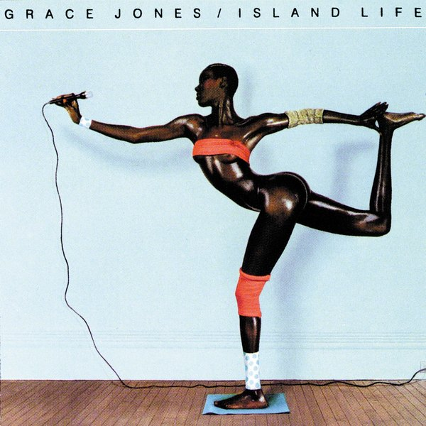

CRVI002893Don Brautigam - Anthrax — State of Euphoria
1988
1988

CRVI002894Ball 'n' Chain Associates - Aswad — Aswad
1976
1976

CRVI002901Jean-Paul Goude - Grace Jones — Island Life
1985
1985

CRVI002902Jean-Paul Goude - Grace Jones — Living My Life
1982
1982

CRVI002903Jean-Paul Goude - Grace Jones — Nightclubbing
1981
1981

CRVI002905CCS (2) - Jimmy Cliff — The Harder They Come
1972
1972
CRVI002906Tony Wright - Max Romeo & The Upsetters — War Ina Babylon
1976
1976

CRVI002907Michael Trevithick - Nick Drake — Pink Moon
1972
1972

CRVI002909Graham Hughes - Robert Palmer — Clues
1980
1980

CRVI002910Bert Kitchen - Robert Palmer — Pride
1983
1983

CRVI002911Moshe Brakha - Robert Palmer — Some People Can Do What They Like
1976
1976

CRVI002913Unattributed - The Buggles — The Age Of Plastic
1980
1980

CRVI002916Ann Borthwick - Traffic — On The Road
1973
1973

CRVI002917Tony Wright - Traffic — The Low Spark Of High Heeled Boys
1971
1971